Posted on 24 Dec 2017 By Noah Hütter
In this post we are going to say Hello from the processing system (PS) in the Zynq SoC
In this post we are going to say Hello from the processing system (PS) in the Zynq SoC. As a platform I am using the RedPitaya board. With only 199$ it is the cheapest Xilinx Zynq board on the market. Unfortunately the hardware is not open source, but with the open source software, I could figure out the necessary settings to get this board running.
sourcevivado
vivado &
Create a new project from File -> New Project, Next. Enter the project name and location.
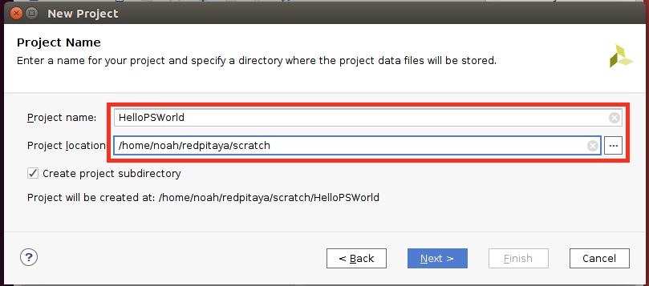
We are going to create an RTL Project (register transfer logic) without specifying any sources.
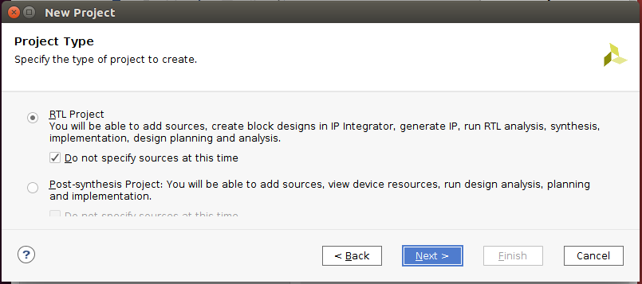
Now we have to select the Xilinx Zynq part number. The Zynq on the RedPitaya board is a
xc7z010clg400-1
You can enter the part number in the Search field. Click next and finish.
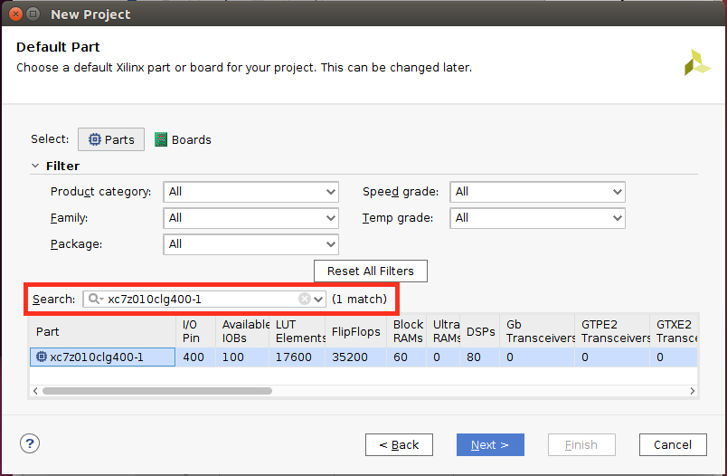
The project is now created and we can start adding design sources.
We are going to create a block design as out top level design entry. We could write this in VHDL if we want, but the block design makes things much easier and we can add new IP block using the graphic interface.
To create a new block design, click on Create Block Design in the IP INTEGRATOR group in the Flow Navigator on the left side of the window. Hence this is out top level block design, we’ll name it system.
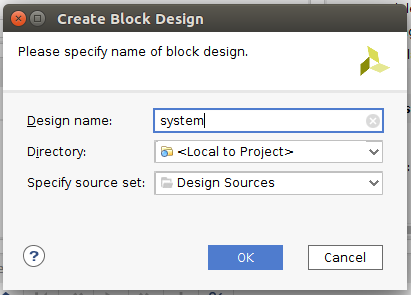
The first and only block we need in this tutorial is the ZYNQ7 Processing System. Add it by clicking the blue + in the Diagram toolbar.
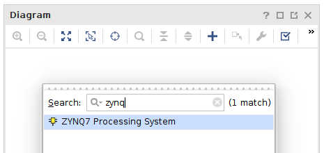
Now double click on the ZYNQ Processing System block to open its settings. We want the absolute minimum in this project. Disable the AXI GP0 interface in PS-PL Configuration -> AXI Non Secure Enablement -> GP Master AXI Interface.
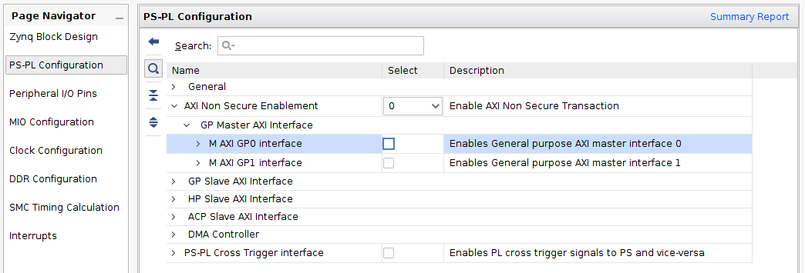
Now we are going to configure the DDR memory part. Click on DDR Configuration in the Page Navigator and apply the following settings.
| Name | Value |
|---|---|
| Memory Type | DDR3 (Low Voltage) |
| Memory Part | MT41J256M16 RE-125 |
| Effective DRAM Bus Width | 16 Bit |
| ECC | Disabled |
| Burst Length | 8 |
| DDR | 533.333333 |
| Internal Vref | Disabled |
| Junction Temperature ( C ) | Normal (0-85) |
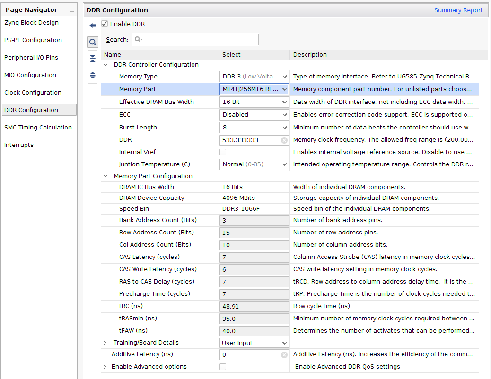
Now we enable the UART 0 peripheral to send a Hello World to the PC. Under MIO Configuration -> I/O Peripherals enable UART 0 on MIO 14..15. These MIO pins are connected directly to the Processing System (PS). On the RedPitaya board they are connected to a USB-UART bridge.
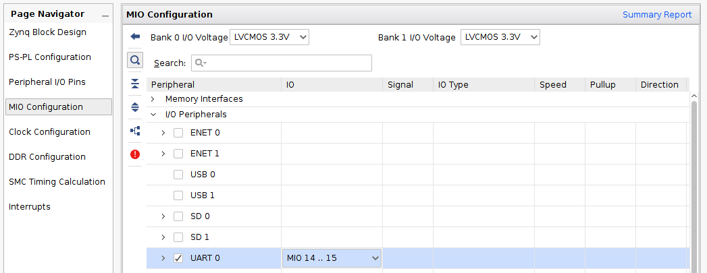
We are only using the PS and can turn off the clock for the PL (Programmable Logic). Disable FCLK_CLK0 in Clock Configuration -> PL Fabric Clocks.
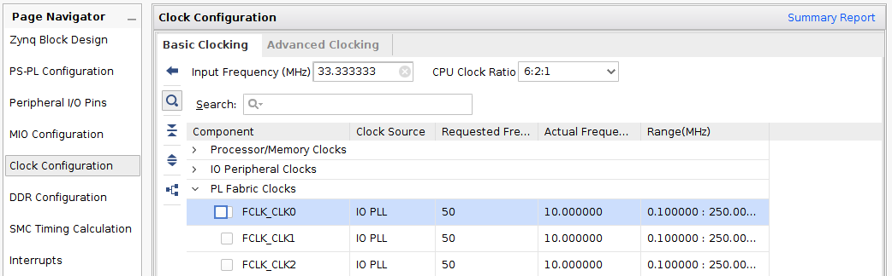
This was the last step. Click OK to apply these settings. A message should appear to run the block automation. Click Run Block Automation.
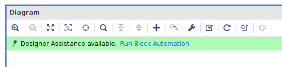
Don’t change anything here, just click OK.
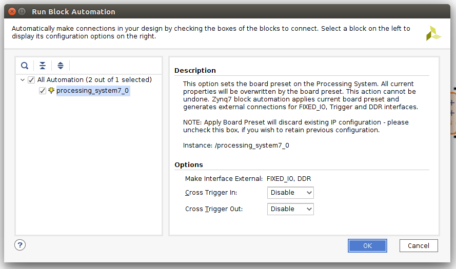
Now the block diagram is finished and should look something like this:
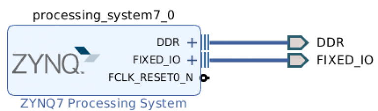
Now we can tell Vivado to generate the output files from the generated block design. Before we do that, I’d like to change the target language to VHDL. This is done in Project Manager -> Settings > General -> Target language.
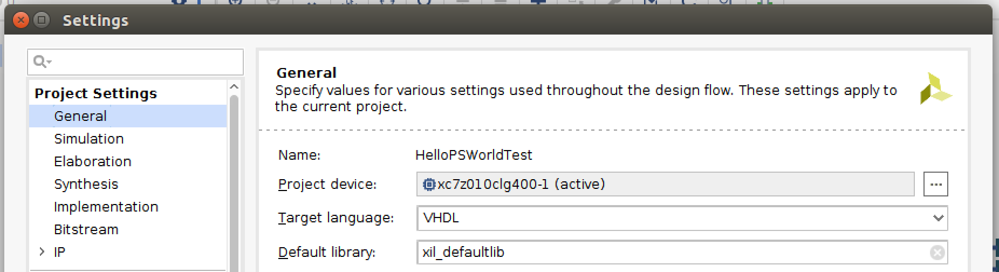
Now, under Sources, right click on the block design and click Generate Output Products.
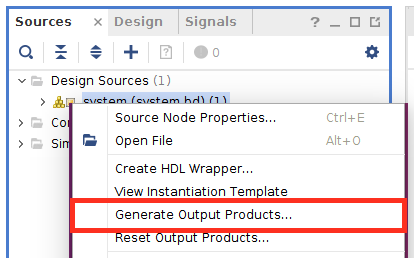
The defaults here are fine. Click Generate. Depending on your CPU, this will take some seconds, be patient. You can increase the number of threads used for this task in the Number of jobs field.
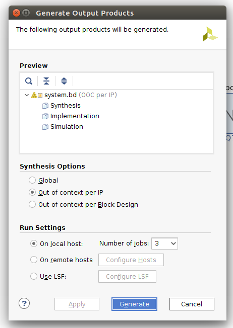
After generating the output products, we create a HDL Wrapper. Right click again on the block design and choose Create HDL Wrapper.
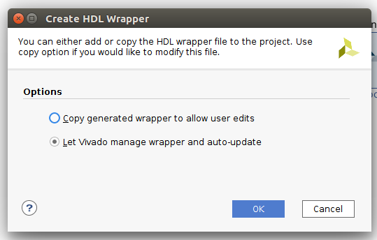
If you expand the system_wrapper source you can see the file hierarchy.
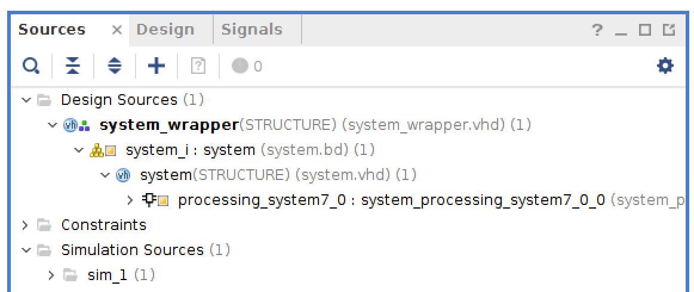
The part in vivado is almost done. To write code for the CPU we need information about the now generated hardware. Under File -> Export click Export Hardware.
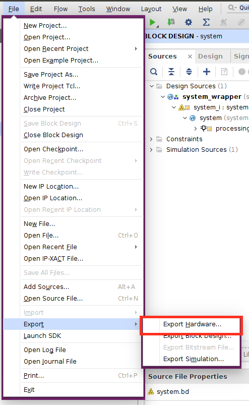
Click OK. This will generate a hardware description file system_wrapper.hdf
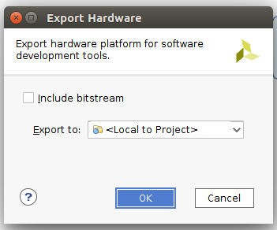
Now we can launch the SDK. The SDK is Xilinx’s tool to develop bare metal C code for the processing system. Click on File -> Launch SDK -> OK.
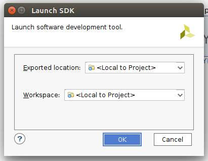
The SDK will launch and automatically import the generated hardware platform specification.
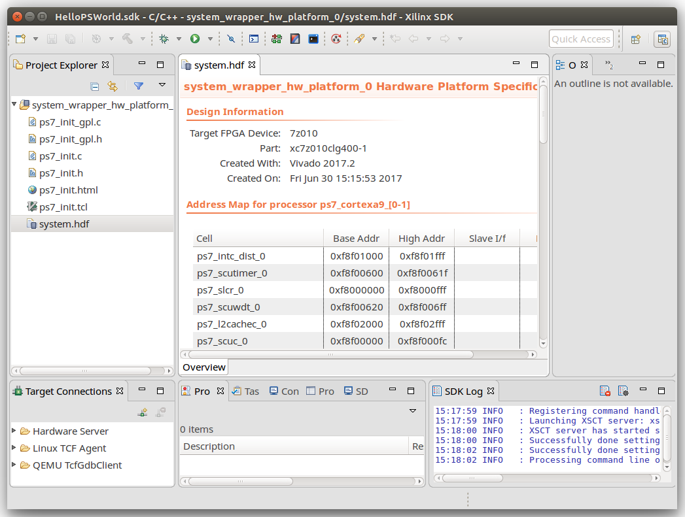
Almost there, hang on! Now we create a board support package from the hardware specification. The BSP is then used to create a C application project. Click File -> New -> Board Support Package.
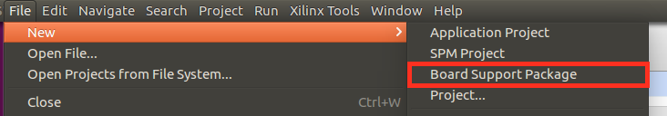
The target hardware is automatically filled with the hardware platform. Click Finish.
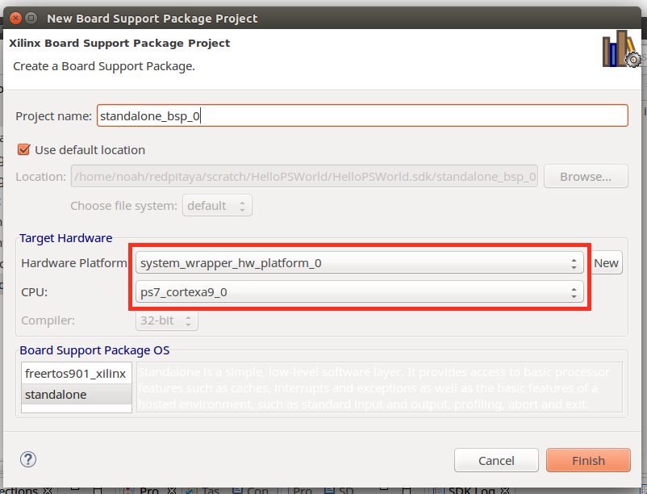
Under Overview -> standalone you can see that the standard in- and output are already mapped to the UART 0 peripheral.
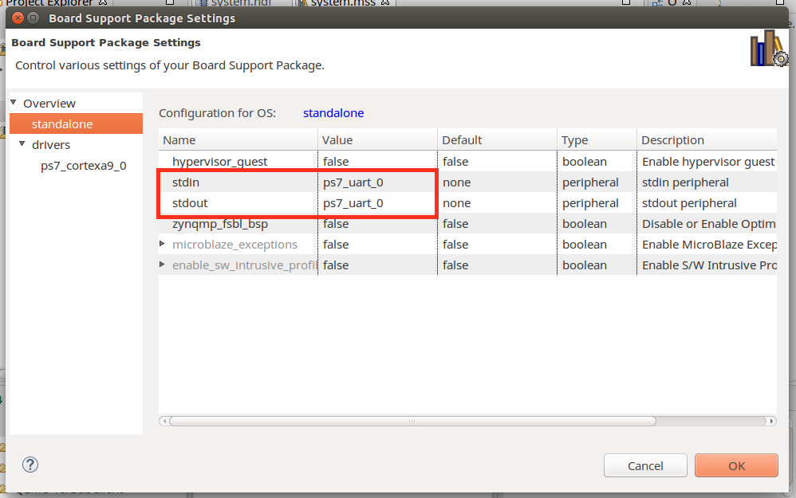
Now we can finally start creating a bare metal C project. Click on File -> New -> Application Project to create a new project. Give it a Name and make sure it is using the existing board support package we created earlier. Click next.
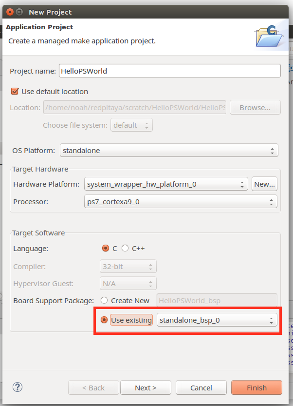
As lazy as we are, choose the Hello World template and hit Finish.
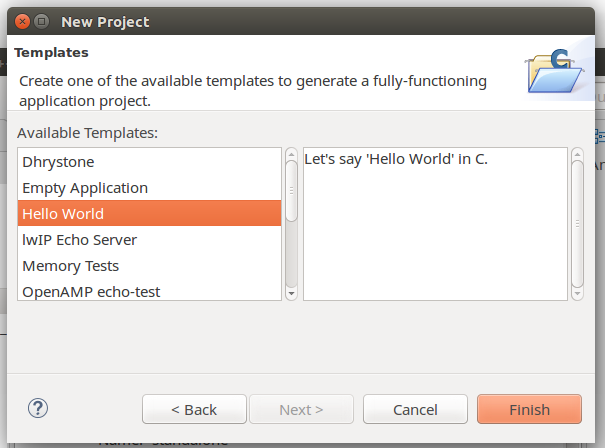
You can open the created file in the Project Explorer.
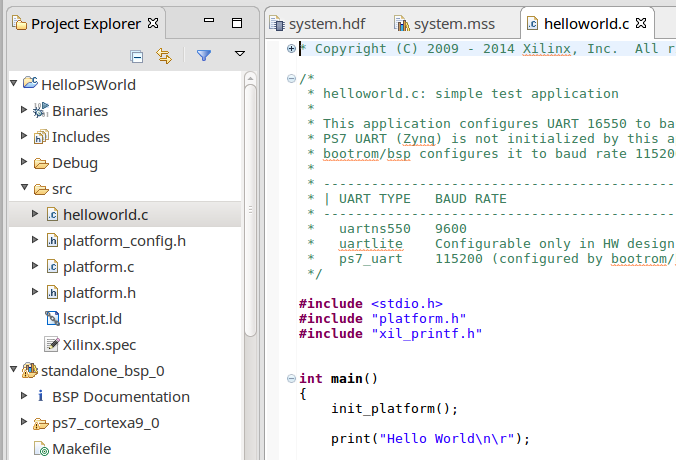
The last step before testing is creating a Run Configuration. This configuration tells the SDK how to load the binary onto the processing system. Click the little arrow to the right of the green play button and click Run Configurations.
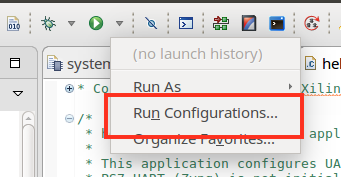
Create a new configuration by double clicking on Xilinx C/C++ application (GDB). Make sure the hardware platform, processor and initialization file are correct. Use the Search… button to locate the ps7_init.tcl file. Enable Run ps7_init or nothing will happen later.
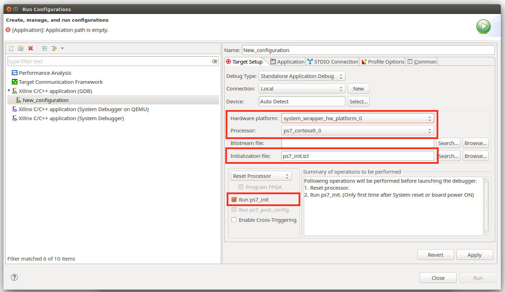
In the Application tab choose you project. Hit apply but don’t Run it yet.
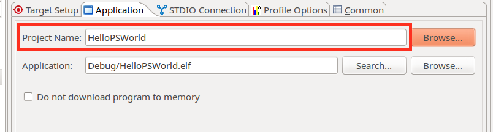
First we have to open a terminal window to listen to the output of the serial port. Launch a terminal and type
sudo picocom /dev/ttyUSB0 -b 115200
Now you can hit Run. This will copy the binary onto the RAM and start execution. In the terminal you should see
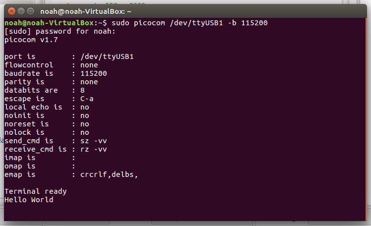
Congratulations! You wrote your first application for the Processing System on a Xilinx Zynq SoC.